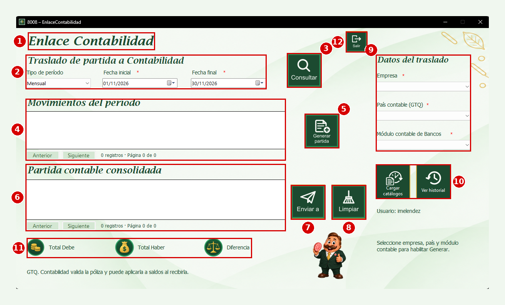
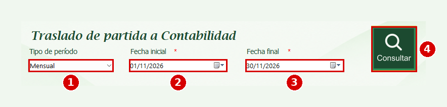
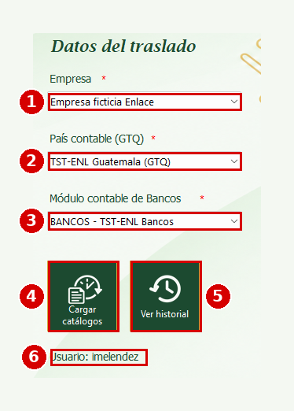
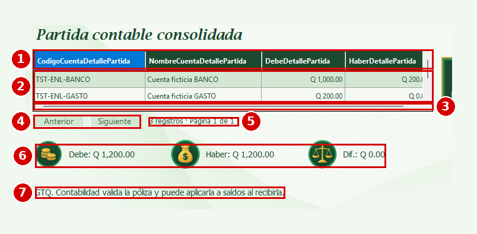
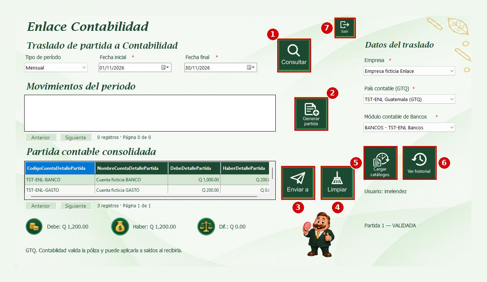
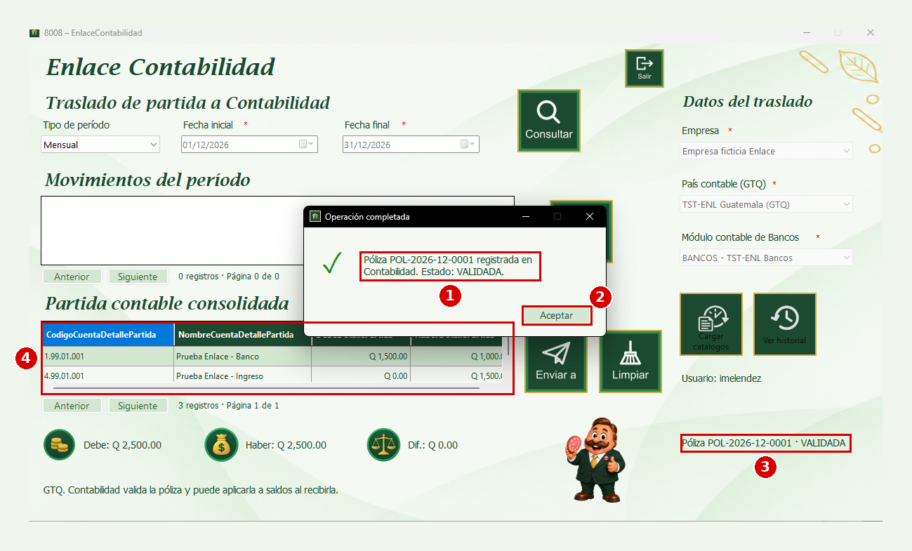
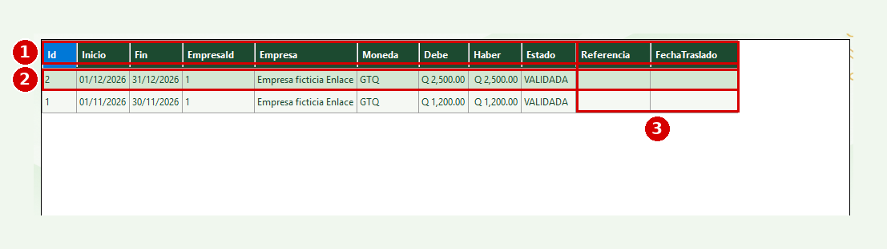

Esta es la ventana del proceso de Enlace con Contabilidad del módulo de Bancos. Sirve para trasladar a Contabilidad la partida contable consolidada de un mes: primero se consultan las pólizas bancarias del período, luego se genera la partida del mes con las pólizas ya validadas y, por último, se envía a Contabilidad, que la recibe como una póliza. Cada partida queda guardada en un historial que se puede consultar o imprimir en un reporte. En las imágenes de esta ayuda, los números rojos indican el orden en que se explica cada elemento.
1. Abra la ventana "Enlace con otros módulos" del módulo de Bancos.
2. Presione el botón "Contabilidad". Se abrirá la ventana "8008 – EnlaceContabilidad".
1. Encabezado; muestra el nombre del proceso, "Enlace Contabilidad".
2. Datos del período; aquí se elige el tipo de período y las fechas del mes que se quiere trasladar.
3. Consultar; busca las pólizas bancarias que están dentro de las fechas indicadas.
4. Movimientos del período; es la tabla con las pólizas encontradas y, en la columna "Resultado", si pueden incluirse en la partida.
5. Generar partida; arma la partida contable consolidada del mes con las pólizas disponibles.
6. Partida contable consolidada; es la tabla con las cuentas contables, el debe y el haber de la partida generada.
7. Enviar a; envía la partida a Contabilidad.
8. Limpiar; deja la ventana lista para empezar de nuevo.
9. Datos del traslado; aquí se eligen la empresa, el país contable y el módulo contable de Bancos.
10. Cargar catálogos y Ver historial; cargan las listas de los datos del traslado y abren el historial de partidas.
11. Totales; muestran el total del debe, el total del haber y la diferencia de la partida.
12. Salir; cierra la ventana.
En la parte superior, a la izquierda de "Salir", también están los botones "Ayuda" y "Reporte", que se explican más adelante.

1. Tipo de período; lista donde se elige cada cuánto se traslada. Por ahora la única opción es "Mensual".
2. Fecha inicial; primer día del período, con el formato dd/MM/aaaa (por ejemplo 01/11/2026). Al abrir la ventana se propone el primer día del mes actual.
3. Fecha final; último día del período, con el mismo formato (por ejemplo 30/11/2026). Al abrir la ventana se propone el último día del mes actual.
4. Consultar; busca las pólizas bancarias que están dentro de las fechas indicadas y las muestra en la tabla "Movimientos del período".
Si cambia alguna fecha, la tabla de movimientos y la partida que estaba en pantalla se vacían y debe volver a consultar. Si la fecha inicial es posterior a la final, el sistema muestra "Revise el rango de fechas." debajo de "Fecha final". Para generar o enviar una partida el rango debe ser un mes completo (del día 1 al último día del mes); si no lo es, el sistema muestra "Seleccione un mes completo.".

1. Empresa; es la lista donde se elige la empresa a la que pertenece la partida. Es un dato obligatorio (el asterisco rojo lo indica).
2. País contable (GTQ); es la lista donde se elige el país contable que recibirá la póliza. Es un dato obligatorio.
3. Módulo contable de Bancos; es la lista donde se elige el módulo contable de Bancos en Contabilidad. Es un dato obligatorio.
4. Cargar catálogos; vuelve a cargar las tres listas anteriores con los datos más recientes. Las listas también se cargan solas al abrir la ventana y empiezan sin ninguna opción elegida.
5. Ver historial; abre el historial de partidas (ver "Historial de partidas").
6. Usuario; indica con qué usuario se inició sesión. Ese usuario queda registrado como responsable de las partidas que genere o envíe.
Si no elige la empresa, el país o el módulo, el sistema muestra "Seleccione una opción." junto a la lista que falta. El botón "Generar partida" se habilita hasta que las tres listas tengan una opción elegida.

1. Revise las fechas del período.
2. Presione el botón "Consultar". La tabla "Movimientos del período" se llena con las pólizas bancarias de esas fechas y debajo de la ventana el sistema indica cuántas pólizas se consultaron.
3. Revise la columna "Resultado" de cada póliza: "Disponible" quiere decir que entrará en la partida; "Ya incluida" que ya forma parte de otra partida; "Pendiente de validación" que la póliza todavía no está VALIDADA; "Cuenta inactiva" que la cuenta bancaria está inactiva y "Requiere política de conversión" que la póliza no es en quetzales (GTQ).
La tabla se muestra por páginas. Con "Anterior" y "Siguiente" se cambia de página y debajo de la tabla se ve la cantidad de registros y la página en que se está.
1. Elija la empresa, el país contable y el módulo contable, y revise que las fechas sean un mes completo.
2. Presione "Generar partida". El sistema pregunta "Se guardará la partida GTQ del mes con todas las pólizas validadas disponibles. ¿Continuar?". Presione "Sí" para confirmar o "No" para cancelar.
3. Si confirma, aparece el mensaje "La partida se generó correctamente." y la tabla "Partida contable consolidada" se llena con las cuentas contables, el debe y el haber. A la derecha de la ventana aparece el número de la partida y su estado, por ejemplo "Partida 1 — VALIDADA".
La partida del mes junta, en quetzales, todas las pólizas validadas disponibles de la empresa. Una póliza que ya está en una partida no se vuelve a incluir.
1. Encabezado de la tabla; tiene estas columnas: "CodigoCuentaDetallePartida" es el código de la cuenta contable; "NombreCuentaDetallePartida" es el nombre de la cuenta; "DebeDetallePartida" es el valor al debe y "HaberDetallePartida" es el valor al haber.
2. Filas; cada fila es una cuenta contable de la partida. La fila resaltada es la que está seleccionada.
3. Barra de desplazamiento; permite moverse hacia la derecha para ver todas las columnas.
4. Botones "Anterior" y "Siguiente"; cambian de página cuando la partida tiene más cuentas de las que caben en la tabla.
5. Cantidad de registros; indica cuántas cuentas tiene la partida y en qué página se está, por ejemplo "3 registros · Página 1 de 1".
6. Totales; muestran "Debe", "Haber" y "Dif." (la diferencia entre ambos). Para poder enviar la partida la diferencia debe ser Q 0.00.
7. Aviso; recuerda que la partida se envía en quetzales (GTQ) y que Contabilidad valida la póliza y puede aplicarla a saldos al recibirla.

1. Consultar; busca las pólizas bancarias del período.
2. Generar partida; guarda la partida contable consolidada del mes. Está deshabilitado hasta que se elijan la empresa, el país y el módulo contable.
3. Enviar a; envía la partida a Contabilidad. Está deshabilitado mientras no haya una partida lista para enviar.
4. Limpiar; vacía la tabla de movimientos y la partida que se ve en pantalla. No borra ninguna partida que ya esté guardada.
5. Cargar catálogos; carga las listas de empresa, país y módulo contable.
6. Ver historial; abre el historial de partidas.
7. Salir; cierra la ventana de Enlace Contabilidad.

1. Con una partida en estado VALIDADA en pantalla (recién generada o elegida del historial), presione "Enviar a".
2. El sistema pregunta "¿Confirma el envío de la partida [número] a Contabilidad? Según la configuración del módulo, puede aplicarse a saldos de inmediato.". Presione "Sí" para confirmar o "No" para cancelar.
3. Si Contabilidad recibe la partida, aparece la ventana "Operación completada" con un mensaje como "Póliza POL-2026-12-0001 registrada en Contabilidad. Estado: VALIDADA.". Presione "Aceptar".
4. A la derecha de la ventana queda el resultado, por ejemplo "Póliza POL-2026-12-0001 · VALIDADA". El código de la póliza es la referencia con la que la partida quedó registrada en Contabilidad. La partida pasa a estado TRASLADADA y "Enviar a" se deshabilita para que no se envíe dos veces.
Si Contabilidad no acepta la póliza (por ejemplo, porque el período contable ya está cerrado), el sistema muestra el motivo en un mensaje y la partida sigue sin trasladarse. Corrija el motivo y vuelva a presionar "Enviar a". Si el envío se interrumpe a la mitad, también puede volver a enviarla: el sistema reconoce la póliza que Contabilidad ya recibió y no la duplica.
Si no ha iniciado sesión, el sistema muestra "Inicie sesión en el sistema para generar o enviar partidas.".

- "VALIDADA"; la partida está guardada y lista para enviarse a Contabilidad.
- "TRASLADADA"; Contabilidad ya recibió la partida. En el historial se ve el código de la póliza y la fecha del traslado.
Esta ventana, llamada "8008 – Historial de partidas", se abre con "Ver historial" y muestra todas las partidas generadas, de la más reciente a la más antigua.
1. Encabezado de la tabla; tiene estas columnas: "Id" es el número de la partida; "Inicio" y "Fin" son las fechas del mes; "EmpresaId" y "Empresa" identifican la empresa; "Moneda" es la moneda de la partida; "Debe" y "Haber" son los totales; "Estado" es el estado de la partida; "Referencia" es el código de la póliza en Contabilidad y "FechaTraslado" es el día y la hora en que se envió.
2. Filas; cada fila es una partida. La fila resaltada es la seleccionada.
3. Referencia y FechaTraslado; están vacías mientras la partida no se ha enviado a Contabilidad.
Para volver a ver una partida, selecciónela en la tabla y presione "Seleccionar". La ventana de Enlace Contabilidad se llena con las fechas, la empresa y las cuentas de esa partida, y si todavía está VALIDADA puede enviarla. Con "Anterior" y "Siguiente" se cambia de página cuando hay muchas partidas.

1. Presione el botón "Reporte", que está en la parte superior de la ventana, a la izquierda de "Salir". Se abre la ventana "8008–FrmReporteEnlaceContabilidad" con el listado de las partidas enviadas a Contabilidad: número, fecha inicial, fecha final, empresa, moneda, total debe, total haber, estado y póliza contable. En las partidas que todavía no se han enviado, la póliza contable muestra "Sin enviar".
2. Desde la barra del reporte puede cambiar de página, hacer zoom, imprimir y guardar el reporte como archivo (por ejemplo PDF, Word o Excel).
1. Presione "Limpiar" si desea empezar de nuevo. La tabla de movimientos y la partida se vacían, los totales vuelven a su valor inicial y a la derecha aparece "Sin partida seleccionada.". Este botón no borra ni modifica ninguna partida guardada.
1. Presione "Ayuda", que está en la parte superior de la ventana, a la izquierda de "Reporte", para abrir esta ayuda.
1. Presione "Salir" para cerrar la ventana de Enlace Contabilidad. Las partidas ya generadas o enviadas quedan guardadas en el historial.